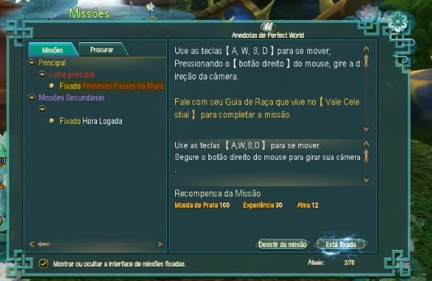
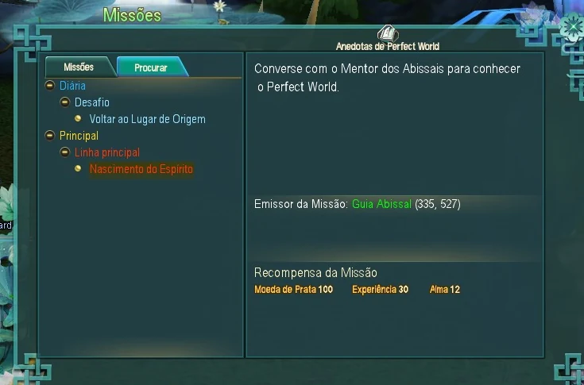
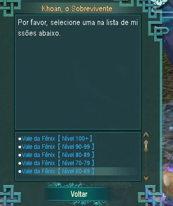
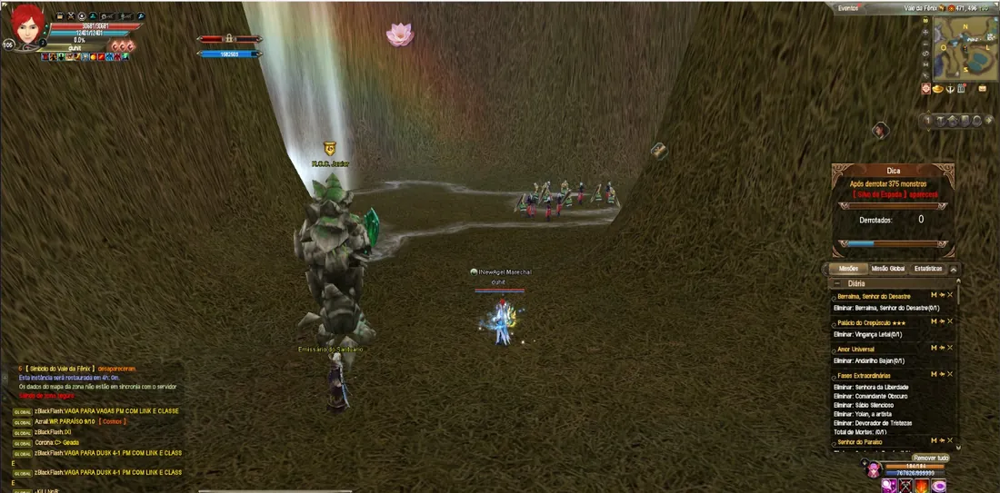
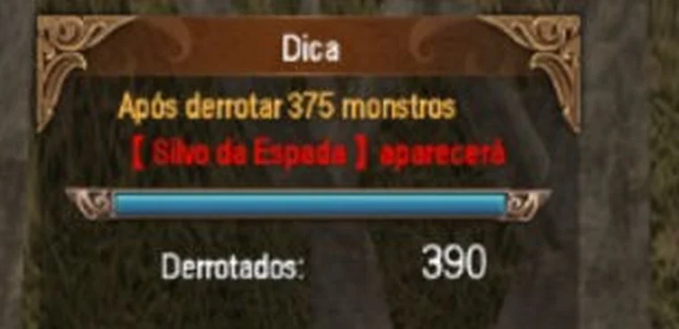
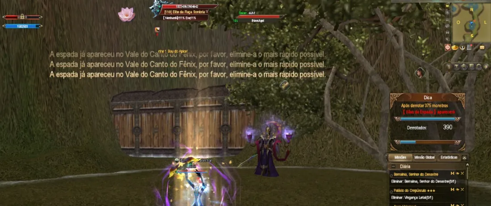
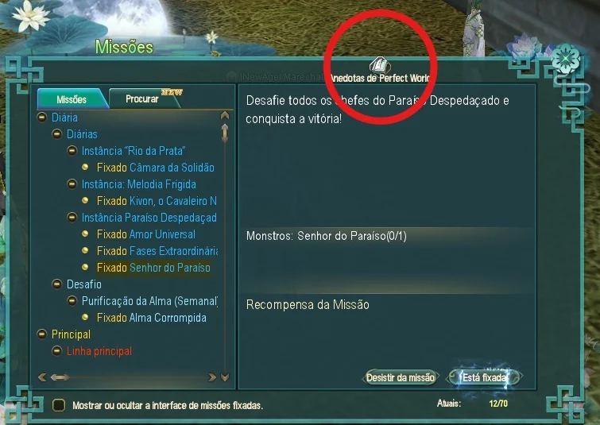
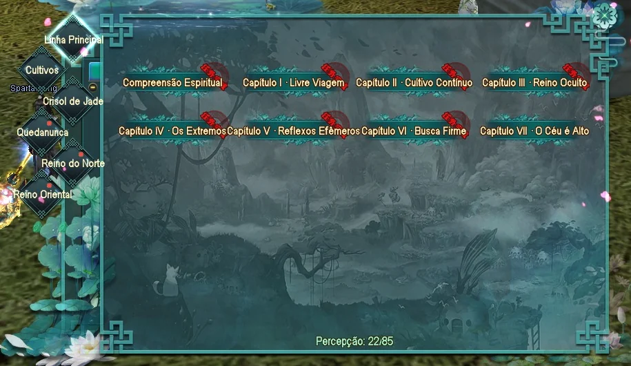

Primeiros passos no PW Classic 1.8.7
Do login ao primeiro objetivo, sem enrolação.
Você acabou de entrar no mundo de Pangu e a tela está cheia de coisa. Este guia é o caminho curto: o que fazer nas primeiras horas para sair do lugar e começar a ganhar nível.
Aqui não tem recomendação de classe. O PW tem classes de suporte e classes de dano, cada uma com seus pontos fortes e fracos, e essa escolha é de cada um — depende do que você gosta de fazer, não do que é melhor no papel.
Upar
A melhor maneira de começar a jornada e ganhar nível são as quests vermelhas. Elas são a linha principal do jogo: dão as diretrizes, explicam os comandos básicos e te levam de um lugar ao outro sem que você precise procurar o que fazer.

Perdido? Clique no nome do NPC
Se você não sabe onde está a quest ou onde fica o NPC, abra a aba Procurar, ao lado de Missões. Ela mostra o Emissor da Missão com o nome em verde e as coordenadas ao lado.
Na grande maioria das vezes, basta clicar nesse nome que o personagem sai andando sozinho até ele. É o que resolve a parte mais chata do começo, que é procurar gente num mapa que você ainda não conhece.

Acabaram as quests vermelhas: Vale da Fênix
Quando você terminar a linha principal, o melhor caminho é a diária Vale da Fênix. Ela pode ser feita cinco vezes por dia.
E você não precisa ficar de olho no nível para não perder a hora: a própria linha vermelha te leva até ela. Siga as quests e o jogo te apresenta o Vale da Fênix no caminho.
Quem entrega é o Khoan, o Sobrevivente, na Cidade do Dragão Leste, ao lado do Ancião da Cidade do Dragão. Na lista dele a missão aparece separada por faixa de nível — 30-49, 50-59, 60-69, 70-79, 80-89, 90-99 e 100+ — e você pega a sua.
Use os dois antes de entrar, sempre. São cinco entradas por dia e elas não voltam: entrar sem os bônus é queimar uma delas pela metade do que ela valia.
- Pedra de Hiper XP — multiplica a experiência por 12
- Presente Ancestral — um boticário que aumenta EXP, Alma e Vigor em 50% (onde conseguir)


O contador no canto direito, e o chefe que ele anuncia
Assim que você entra, aparece um painel Dica no canto direito da tela. Ele não é enfeite: é a única coisa que te diz que o vale tem um chefe, e quanto falta para ele.

Quando a conta fecha, o Silvo da Espada nasce e o jogo avisa na tela inteira: "A espada já apareceu no Vale do Canto do Fênix, por favor, elimine-a o mais rápido possível." Não é sutil, e é de propósito.

Não saia no minuto em que a quest fechar. A espada é experiência, e experiência é o que você foi buscar ali: enquanto você está subindo, ela vale a pena. Num personagem de nível alto ela rende pouco — com você é o contrário.
Por isso, se o contador estiver perto do número, os monstros que faltam valem mais do que parecem. Não são mais um punhado de monstros: são o que faz o chefe nascer.
Anedotas: experiência e Espírito
A última maneira de upar, e uma das mais importantes, são as Anedotas. Na tela de Missões, no meio, tem um botão.

Clicando nele aparecem seis abas: Linha Principal, Cultivos, Crisol de Jade, Quedanunca, Reino do Norte e Reino Oriental. Cada uma tem sua própria série de missões, organizada em capítulos.

Fora a experiência, elas dão Espírito ao personagem. É o que aumenta resistência e dano, e é por isso que essas missões valem tanto quanto valem.
Para começar uma: selecione a quest, depois a sub-quest, e clique em Retomar missão. O jogo mostra qual missão você terá que fazer.
Importantíssimo: use o Presente Ancestral em TODAS estas quests. É o mesmo boticário de +50% de EXP, Alma e Vigor do Vale da Fênix, e aqui ele vale para uma série inteira de missões, não para uma entrada só.
Onde conseguir o Presente Ancestral
Você consegue em algumas quests ou na loja de gold de evento.
O gold de evento vem de deixar o personagem online: são 5 por hora, só por estar logado. E o Presente Ancestral custa 5 — ou seja, uma hora online dá para um.
Isso não quer dizer que todo o seu gold deva ir para ele. A loja tem outras coisas que valem a pena, e a conta acima serve para você saber o preço em horas, não para decidir onde gastar.